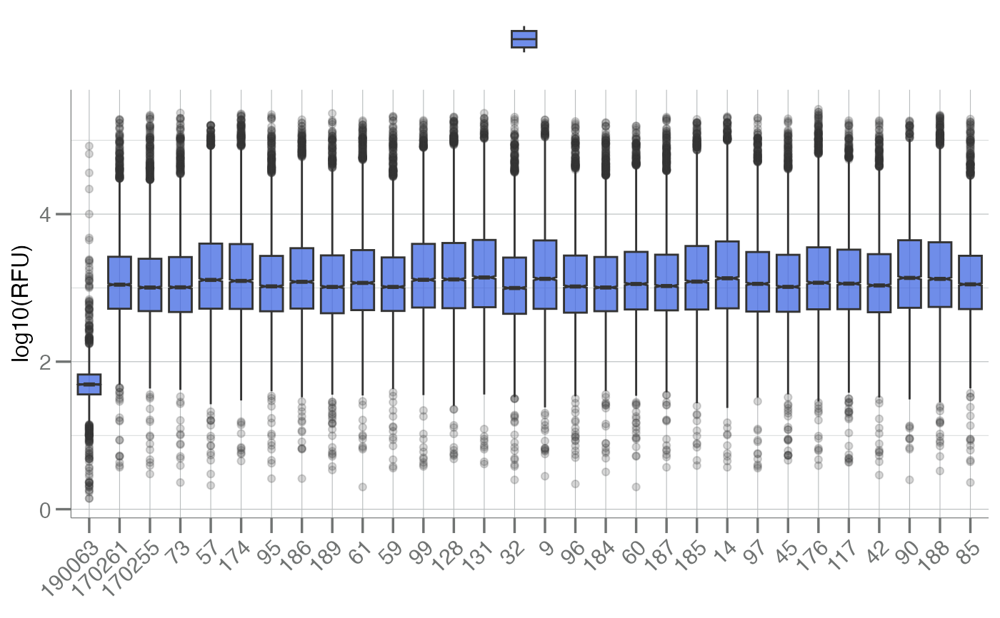
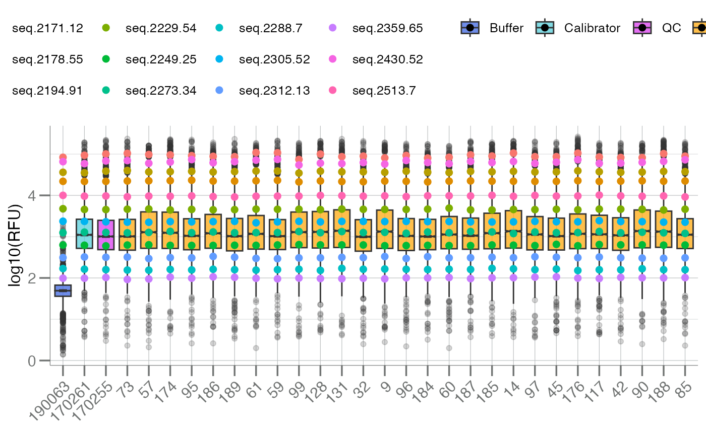
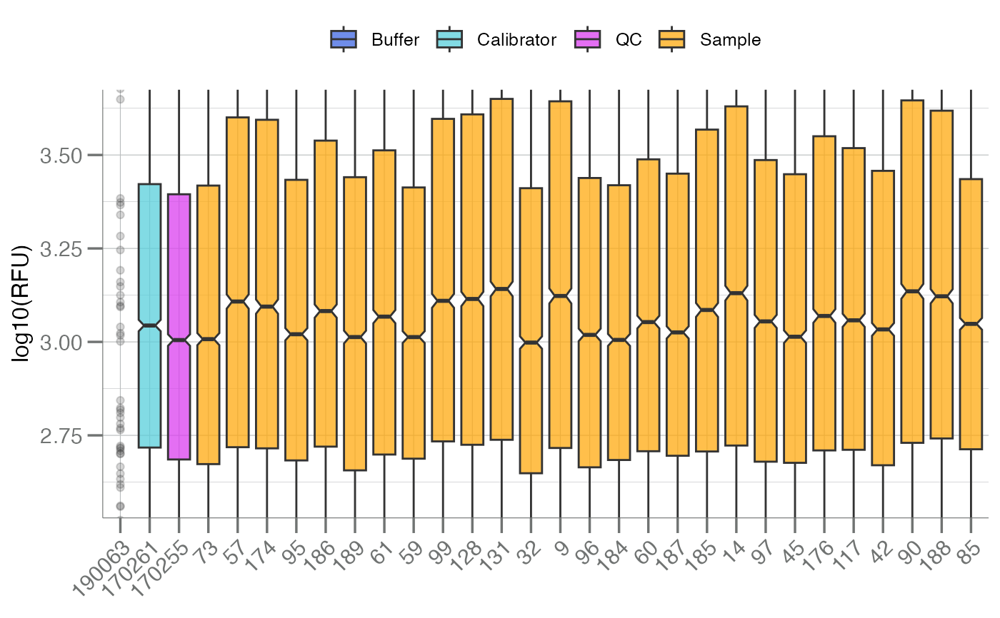
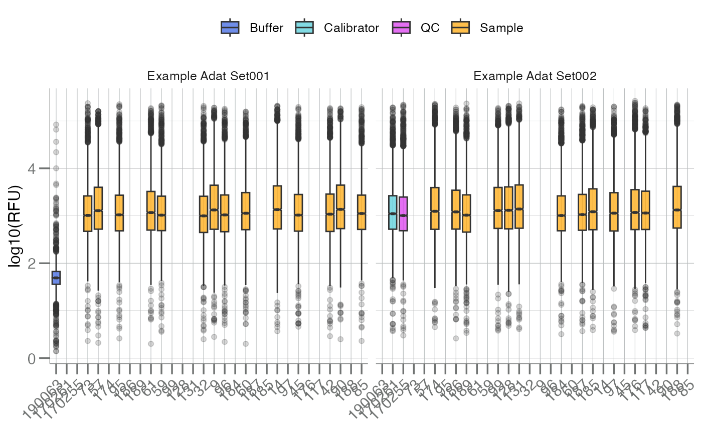

Plots the distribution of all analytes, stratified by subarray, as a
boxplot. These plots are intended to be used as a quality control
visualization tool for SomaScan assay runs. In SomaScan (soma_adat) data
format, the term "subarray" is analogous to sample, and typically indicates
a row in the data.
Usage
boxplotSubarray(
.data,
color.by = NULL,
labels = "SampleId",
y.lim = NULL,
do.log = TRUE,
apts = NULL
)Arguments
- .data
A
soma_dataor data frame object, created from a SomaScan ADAT file, via a call toread_adat(). This object must contain the following columns:PlateId,SampleId,SampleType,SampleMatrix,Barcode2d,SlideId,Subarray, andHybControlNormScale.- color.by
Character. A column name to color the subarrays (samples) by. This is typically a sample processing or clinical data field in the ADAT such as
SlideId.- labels
Character. The column name of
.dataused to label each box.- y.lim
Numeric. Length 2. The upper- and lower-quantiles of the total data used to determine the y-axis limits of the plot. If
NULL, all points are shown.- do.log
Logical. Should the data be log10-transformed?
- apts
Optional. A subset of analytes (as
AptNames) to add as points on top of the subarray boxplot.
See also
geom_boxplot()
Other boxplots:
boxplotBeeswarm(),
boxplotGrouped()
Examples
data <- SomaDataIO::example_data
# Randomly select a small subset of samples
s_rn <- withr::with_seed(101, sample(rownames(data), 30L))
data <- data[s_rn, ]
boxplotSubarray(data)

# Color by `SampleType` variable
boxplotSubarray(data, color.by = "SampleType")
# Find the feature names of the corresponding hyb controls
hybs <- SomaDataIO::getAnalyteInfo(data) |>
dplyr::filter(grepl("^Hybridization", Type)) |>
dplyr::pull(AptName)
# Pass hyb controls to `apts` arg; plots the points in boxes/whiskers
boxplotSubarray(data, color.by = "SampleType", apts = hybs)

# Zoom to (20, 80) quantiles
boxplotSubarray(data, color.by = "SampleType", y.lim = c(0.2, 0.8))

# Group by an additional variable
boxplotSubarray(data, color.by = "SampleType") +
ggplot2::facet_wrap(~PlateId)
